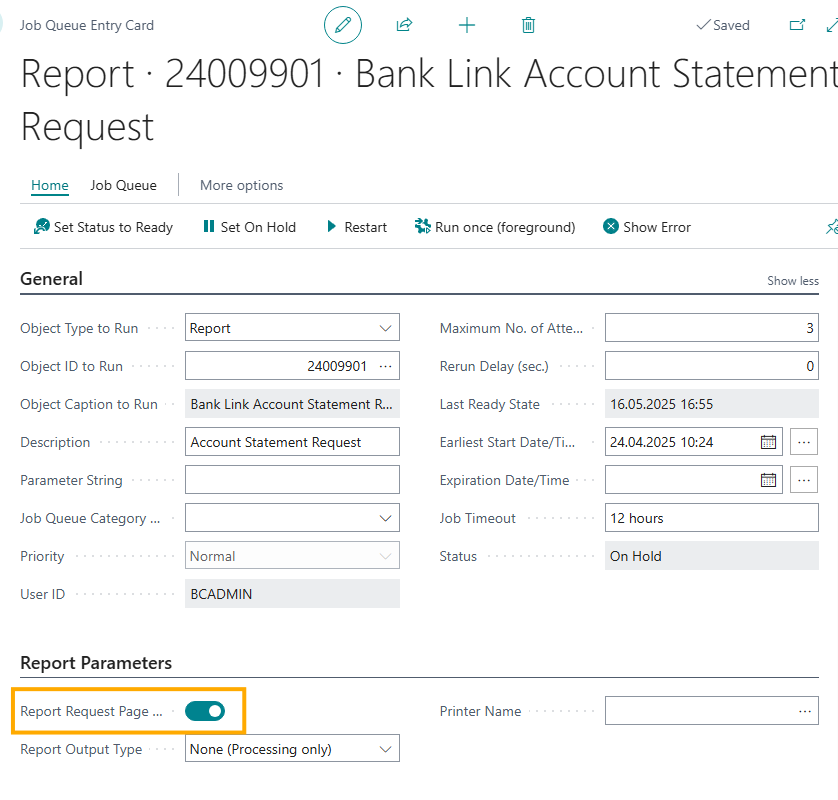

Baltic Bank Connect
Signing a Direct Channel Agreement with the Bank Gateway
To use the bank interface in Business Central, you need to sign a gateway direct channel agreement with your bank and order a certificate. The bank will provide instructions for ordering the certificate after the agreement is signed. The certificate file format must be .p12 and password-protected.
Swedbank
https://www.swedbank.ee/business/d2d/ebanking/gateway?language=ENG
Supported services:
- Sending payments to the bank (unsigned payments)
- Account statement - automatically retrieves the previous day's statement
- Query for the current day's account statement
LHV
Supported services:
- Sending payments to the bank (unsigned payments)
- Account statement - automatically retrieves the previous day's statement
SEB
https://www.seb.ee/en/business/daily-banking/tools-and-online-services/baltic-gateway
Supported services:
- Sending payments to the bank (unsigned payments)
- Query for the current day's account statement (the queue must be configured with sufficient frequency to avoid missing transactions at the end of the day)
COOP Bank
https://www.cooppank.ee/en/business/daily-banking/interfaces
Supported services:
- Sending payments to the bank (unsigned payments)
- Account statement - automatically retrieves the previous day's statement
Security Certificate
To use the bank interface in Business Central, you need to configure a security certificate. After signing the agreement, the bank will send instructions for ordering the certificate. As the steps involve technical details, it is recommended to seek assistance from your IT department or contact your BC partner.
Steps required:
- Generate a certificate request for ordering the certificate.
- Merge the certificate and private key files into a pfx/p12 file and generate a password.
- Configure the pfx/p12 file and password in BC.
Swedbank guide:
http://dev.swedbankgateway.net/content/general-info/doc/How-to-generate-CSR-and-convert-private-key-to-p12.pdf
https://www.swedbank.com/openbanking/swedbank-gateway-go-live.html
LHV guide:
https://partners.lhv.ee/en/connect/#certificates
SEB guide:
https://developer.baltics.sebgroup.com/bgw/documentation/authentication
Coop Bank guide:
https://res30f.cooppank.ee/dg1aslker/image/upload/v1714044912/dokumendid/ariklient/liidestused/en/Gateway_votmete_genereerimise_juhend_eng.pdf
Configuring the Bank Interface
Setting up using assisted setup
Go to Assisted Setup and select Set-Up OIXIO Bank Link.
Bank Link Set-up page opens, where you need to perform necessary actions and proceed to the next steps using the Next button.
Manual setup
Open Bank Link Setup in Business Central and select the bank to be integrated from the Bank Channels block. The fields to be configured differ by bank.
For SWED SGW, fill in the Agreement ID, API Key (Client ID), and Password fields, then upload the certificate using the Add Certificate button on the menu bar:
For SEB BGW, fill in the Agreement ID field and add the certificate.
For LHV CONNECT, only the certificate needs to be added.
For COOP CPGW, only the certificate needs to be added.
Bank Account Configuration
Open the Bank Accounts list and access the card for the bank account to be integrated. Fill in the OIXIO Bank Interface block:
The following fields must be completed on the bank account card:
- Credit Transfer Msg. Nos.
- Bank Acc. Posting Group
- SWIFT Code
- IBAN
- Bank Statement Import Format
- Payment Export Format
Job Queue Entries
Set the job queue entries for the respective bank to the ready state.
Exporting Payments to the Bank
In the Payment Journal Batches, check Allow Payment Export to enable sending the payment file to the bank and Check Payment Statuses to verify the payment status before posting.
Complete the Payment Journal with payments to be made, either manually or by suggesting payments for a vendor.
To send the payment file to the bank, select Bank - Send to Bank... from the menu bar.
Payments are sent to the bank in an unsigned state. They must be separately approved and executed in the bank.
After the payment file is sent to the bank, the Payment Journal factbox will display payment status information after a short while.
Possible payment statuses:
- RJCT - Rejected - the payment was rejected by the bank
- ACTC - Pending - awaiting approval and execution in the bank
- PDNG - Pending - awaiting confirmation
- PART - Partially approved - at least one payment is approved
- ACSP - Approved - the payment is approved but not yet executed
- ACSC - Executed - the payment has been executed
- ACWC - Accepted with changes - changes were made and accepted, but the payment is not yet executed
- Pending - the payment import file is being verified (SEB)
- File check successful - the payment import file verification was successful (SEB)
- Rejected - the payment import file verification was unsuccessful (SEB)
Importing Bank Statements
Manual Import
In the Payment Reconciliation Journal, select Bank Link Import Transactions:
In the window that opens, choose the type of statement to import for the desired bank:
- End of Day Statement - only the end date can be specified. All unimported bank transactions for this date will be retrieved into BC.
- Past Days Statement - specify a period for retrieving the bank statement into BC.
- Intraday - retrieves the BC's work date statement.
After setting the filters, a message will appear:
This means the query has been sent to the bank and it will take some time for the bank statement to appear in BC. SEB statements appear immediately.
Automatic Import of Bank Statements
To automatically import the previous day's bank statement, configure the Job Queue Entries for an automatic task.
Go to Job Queue Entries and click New.
Fill in the Object Type to Run with Report and Object ID to Run with 24009901, and set the Earliest Start Date/Time:
Set the desired time for retrieving the previous day's statement into BC.
Then check the box for Report Request Page Options:

A view identical to Bank Link Account Statement Request in the Payment Reconciliation Journal will open.
Fill in the Bank Account field for the bank statement to be imported automatically and select End of Day Statement in the Statement Type field. Leave the Start Date and End Date fields blank.
In the Recurrence block, specify which days the query should run and set the No. of Minutes between Runs to 1440 to ensure the query is run daily.
A separate queue entry must be created for each bank account.